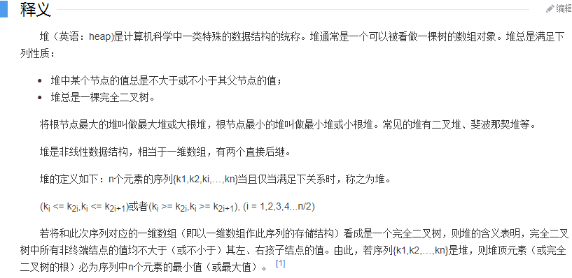

原文出处:本文由博客园博主Frost_Delay提供。
原文连接:https://www.cnblogs.com/Frost-Delay/p/ju_ruo_de_dui_xue_xi_zhi_lv.html
原文连接:https://www.cnblogs.com/Frost-Delay/p/ju_ruo_de_dui_xue_xi_zhi_lv.html
上次讲了堆，别人都说极其简单，我却没学过，今天又听dalao们讲图论，最短路又用堆优化，问懂了没，底下全说懂了，我？？？，感觉全世界都会了堆，就我不会，于是我决定补一补；

——————来自百度百科
所以，堆其实就是一棵树；
大根堆：根节点比子节点权大；
小根堆：根节点比子节点权小；
了解到了这里，我觉得可以开始做题了；
题面自己去洛谷看（我懒）
就是一个小根堆，每次取最小的两堆果子合并，排序会tle，所以用堆做，每次把合并后的再加入堆中就行了；
为了练习，先来一个手写堆；
详细看代码：


#include<iostream> #include<cstdio> #include<cctype> #include<cmath> using namespace std; inline int read() { int x=0,f=1;char c=getchar(); while(!isdigit(c)){if(c=='-')f=-1;c=getchar();} while(isdigit(c)){x=(x<<3)+(x<<1)+(c^48);c=getchar();} return x*f; } int dui[10010],n,m,ans; inline void down(int x) { if(x*2<=n) { int t=x; if(dui[x]>dui[x*2])t=x*2; if(dui[x]>dui[x*2+1]&&x*2+1<=n&&dui[x*2+1]<dui[x*2])t=x*2+1; if(x==t)return; swap(dui[x],dui[t]); down(t); } } inline void up(int x) { if(x>1) { if(dui[x]<dui[x/2]){ swap(dui[x],dui[x/2]); up(x/2); } } } inline int top(){return dui[1];} inline void delet() { dui[1]=dui[n]; dui[n--]=0; down(1); } inline void add(int x) { dui[++n]=x; up(n); } int main() { m=read(); for(int i=1;i<=m;i++) { int a=read(); add(a); } for(int i=1;i<m;i++) { int x=top(); delet(); int y=top(); delet(); ans+=(x+y); add(x+y); } cout<<ans<<endl; return 0; }
1 #include<iostream>
2 #include<cctype>//为了用isdigit
3 #include<cstdio>
4 using namespace std;
5 inline int read()//快读(isdigit用来判读入的是否是数字，据说比c>'0'这样的快) ；
6 {
7 int x=0,f=1;char c=getchar();
8 while(!isdigit(c)){if(c=='-')f=-1;c=getchar();}
9 while(isdigit(c)){x=(x<<3)+(x<<1)+(c^48);c=getchar();}
10 return x*f;
11 }
12 int n,dui[10010],size;//dui用来存堆，size记录元素个数；
13 inline void swap(int &a,int &b){int t=a;a=b;b=t;return;}//交换值，&直接取地址交换，据说手写更快；
14 inline void up(int i)//把堆里元素向上移动
15 {
16 while(i>1)//直到查询到堆顶
17 if(dui[i]<dui[i/2])//如果i的元素比它父节点小，则交换两个元素；
18 {
19 swap(dui[i],dui[i/2]);
20 i/=2;//继续向上查询
21 }
22 else return;
23 }
24 inline void init(int x){dui[++size]=x;up(size);}//插入新的元素，size+1，然后看新元素是否要往上移动；
25 void down(int i)//向下移动大的元素
26 {
27 int s=i*2;//i的左儿子
28 while(s<=size)
29 {
30 if(dui[i*2+1]<dui[i*2])s++;//从i的左儿子和右儿子中选择较小的交换
31 if(dui[i]>dui[s])//如果i的权值比i的儿子的权值大，将i向下移动
32 {
33 swap(dui[i],dui[s]);
34 i=s;s=i*2;//注意！！！一定要i=s，我忘了会+1卡了好久，左子树和右子树一定要分清楚！！！
35 }
36 else return;
37 }
38 }
39 void shanchu(){dui[1]=dui[size--];down(1);}//合并后删除堆顶元素 ，并将元素向下传递；
40 int top(){return dui[1];}//取出堆顶元素
41 int main()
42 {
43 n=read();
44 int a;
45 for(int i=1;i<=n;i++)
46 {
47 a=read();init(a);
48 }
49 long long answer=0;
50 while(size>=2)
51 {
52 int a1=top();
53 shanchu();
54 int a2=top();
55 shanchu();//取出堆中最小的的两堆果子
56 answer+=(a1+a2);
57 init(a1+a2);//将合并后的一堆果子加入堆中
58 }
59 printf("%lld\n",answer);
60 return 0;
61 }偷懒做法，用STL
1 #include<iostream>
2 #include<set>
3 using namespace std;
4 multiset<int>dui;//multiset会自动帮你排序，从小到大，设它是一个堆
5 int n;
6 int main()
7 {
8 int a;
9 cin>>n;
10 for(int i=1;i<=n;i++)
11 {
12 cin>>a;
13 dui.insert(a);//把元素放进堆里
14 }
15 int ans=0;
16 for(int i=1;i<=n-1;i++)
17 {
18 int a1=*dui.begin();//dui.begin()返回的是地址，*取出地址里的值；
19 dui.erase(dui.begin());//删除堆顶，用地址传递
20 int a2=*dui.begin();
21 dui.erase(dui.begin());
22 ans+=(a1+a2);
23 dui.insert(a1+a2);//将合并后的加入堆
24 }
25 cout<<ans<<endl;
26 return 0;
27 }
未完待续，如果我忘了可以催更（虽然没人看我博客）